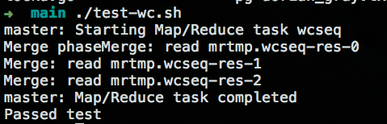
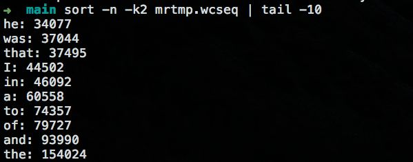
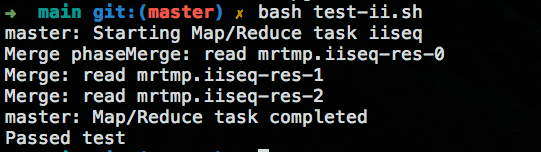

老司机带你用 Go 语言实现 MapReduce 框架
MapReduce 是 Google 提出的一个软件架构，用于大规模数据集（大于1TB）的并行运算。简而言之，就是将任务切分成很小的任务然后一个一个区的执行最后汇总，这就像小时候我们老师经常教育我们一样，大事化小，小事化了（瞬间感觉那时候老师好言简意赅啊!!!）思想就这么一个思想，那么按照这个思想在现代软件定义一切的世界里面，我们怎么运用这样的方式来解决海量数据的处理，这篇就告诉你一个这样的一个简单的实现使用 Go 语言。
上车了
简单介绍一下几个概念：
概念“Map（映射）”和“Reduce（归纳）”，及他们的主要思想，都是从函数式编程语言借来的，还有从矢量编程语言借来的特性。当前的软件实现是指定一个 Map（映射）函数，用来把一组键值对映射成一组新的键值对，指定并发的 Reduce（归纳）函数，用来保证所有映射的键值对中的每一个共享相同的键组。
以一个例子为简单的开始：
词频的统计（WorldCount）,在现实的需求的上面可能我们可能有这样的一个需求，就是计算出一篇文章里面出现每个单词的个数。具体到生活就是，就算 Top N 的结果，比如全校要开表彰大会，找出 10 个好学生这样的 Top N 这样的例子比比皆是，而 World Count 就是他的一个实现，只是最终的结果只取出排在前面的结果而已。
有了上面找出 10 个好学生的需求的时候，我们来想想怎么去实现它呢，很显然这个需求可能是校长在开会的时候提出来的，那么具体的实现就是每个年级组长是不是要把每个年级排名前 10 的学生找出来，然后年级组长的领导，将这些信息在汇总取出 前 10 的学生咯，那么具体的每个年级怎么做呢？同理，将每个班的前10名学生找出来，然后汇总到年级部门咯。
发车了
基本概览和思路已经明白了，现在开始构建整个 MapReduce 框架了，首先我们明确一个思想就是，将任务划分成合适的大小，然后对其进行计算，然后将每一步计算的的结果，进行一个汇总合并的过程。那么这两个过程我们先分别定义为Map 和Reduce 过程。
还是以 World Count 这个为例子：
Map 的处理过程就是读取给定的文件，将文件里面的每个单词的出现频率初始化为 1。
Reduce 的处理过程就是将相同的单词，数据进行一个累加的过程。那么，我们 MapReduce 框架的目的是调用在合适的时候调用这个 Map 和 Reduce 的过程。
在 common_map.go 里面 doMap 方法就是给定文件，读取数据然后，调用 Map 这个过程,代码里面有注释，在这里进行一个简单概述一下主要有这几个步骤：
- 读取文件；
- 将读文件的内容，调用用户 Map 函数，生产对于的 KeyValue 值；
- 最后按照 KeyValue 里面的 Key 进行分区，将内容写入到文件里面，以便于后面的 Reduce 过程执行；
|
doReduce 函数在 common_reduce.go 里面，主要步骤:
- 读取 doMap 过程中产生的中间文件；
- 按照读取相同文件中的 Key 进新按照字典顺序进行排序；
- 遍历读取的 KeyValue，并且调用用户的 Reduce 方法，将计算的结果继续写入到文件中；
|
Merge 过程
当然最后就是将每个 Reduce 产生的结果进行一个Merge 的过程，在 merge 的过程中，同样也是需要进行按照 Key 进行字典顺序排列，然后写入到最终的文件中。代码跟 reduce 还是相似的，这里就不自爱赘述了。
使用 go 的多线程来实现分布式的任务执行，这里主要是是 schedule.go 里面的 schedule 方法，主要是步骤：
- 通过不同的阶段（ Map or Reduce ），获取到需要执行多少个 map (reduce)，然后调用远程的 worker.go 里面的 DoTask 方法；
- 等待所有的任务完成，然后才结束。这里主要使用了go 语言的一些特性，Go RPC documentation 和 Concurrency in Go。
|
到站了
- 运行测试:

- 测试结果:

- 测试倒排索引结果:

源码仓库地址
https://github.com/happyer/distributed-computing